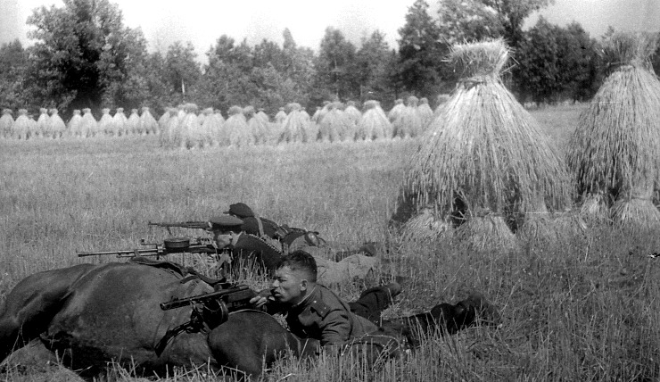
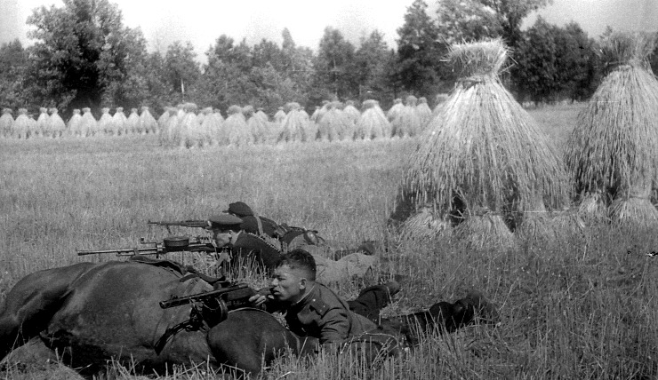
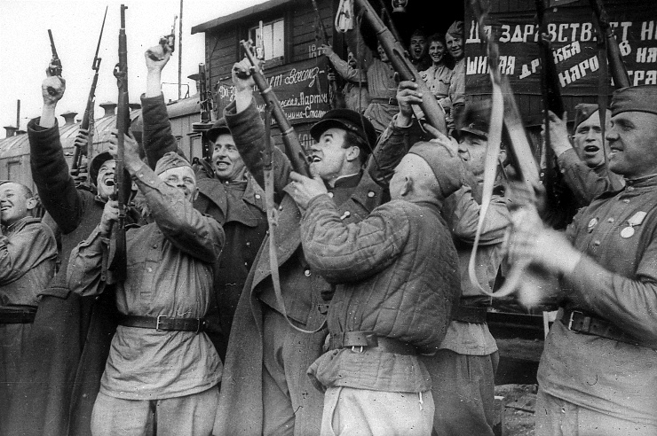
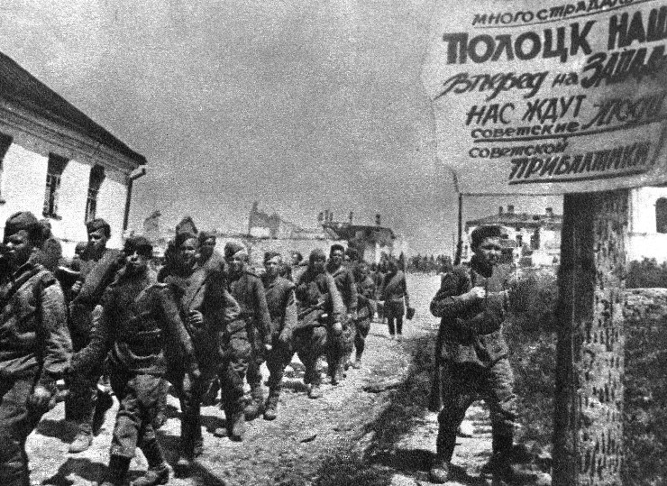
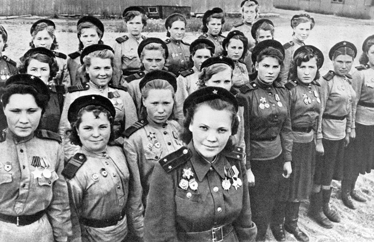
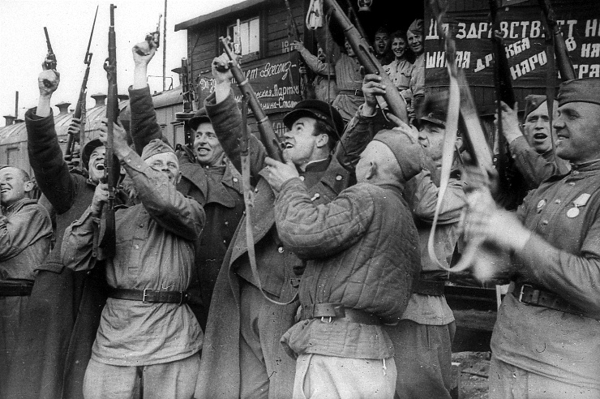
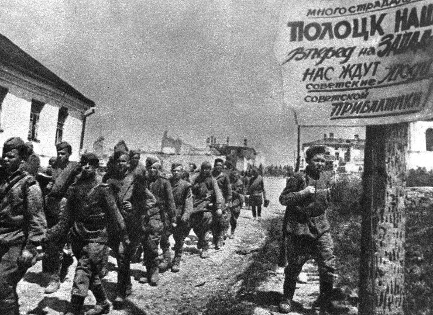
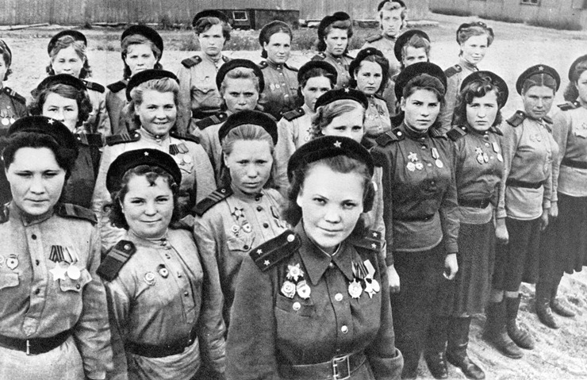

Великая Отечественная война
Память о героях
Это видео посвящено 80-ти летию освобождения Беларуси от немецко-фашистских захватчиков. Мы вспоминаем великие страницы истории и чествуем героев, сражавшихся за свободу Родины.
Беларусь всегда будет помнить своих защитников и передавать память о подвигах из поколения в поколение. Этот ролик — дань уважения героям и символ нашей благодарности.


 



 





История освобождения Беларуси
Великая Отечественная война, начавшаяся 22 июня 1941 года, стала одним из самых трагических периодов в истории Беларуси. Нацистская Германия, стремясь к быстрой победе, вторглась на территорию Советского Союза, и белорусские земли стали первой мишенью их агрессии. Оккупация привела к огромным страданиям: уничтожению мирного населения, разрушению городов и деревень, грабежам и насилию. Беларусь была одной из самых пострадавших республик, потеряв миллионы жизней и погрузившись в хаос.
Однако с первых дней оккупации белорусы начали организовываться для сопротивления. Создавались партизанские отряды, которые вели активную борьбу с оккупантами. Сотни смелых людей, рискуя своими жизнями, присоединялись к партизанам, осуществляя диверсии на железнодорожных путях, уничтожая вражеские склады и собирая информацию о перемещении немецких войск. С каждой успешной акцией дух народа креп, а надежда на освобождение становилась все более реальной.
Кульминацией освобождения Беларуси стало проведение операции "Багратион" в 1944 году, в которой принимали участие тысячи советских солдат. Операция началась 22 июня и продолжалась до 19 августа, охватывая обширную территорию, включая Гомель и его окрестности. Гомель, как важный стратегический пункт, стал одной из ключевых целей советского командования.
В начале 1944 года нацистские войска начали отступление под давлением советских сил. 26 июня 1944 года, после ожесточенных боев, Гомель был освобожден от фашистских захватчиков. Это событие стало знаковым для всей Беларуси. Операция по освобождению города была встречена с радостью и ликованием. Местные жители, которые пережили ужас оккупации, вышли на улицы, чтобы встретить освободителей, радуясь возвращению свободы и надежды.
Советские солдаты проявили героизм и стойкость, сражаясь за каждую улицу и каждый дом. Бои были ожесточенными, и каждая победа давалась ценой больших потерь. Гомель, который стал символом стойкости и сопротивления, занял важное место в истории освобождения Беларуси. Этот город видел, как его жители поднимались из руин, восстанавливая разрушенные здания и возвращая к жизни свою землю.
После освобождения Гомеля началась сложная работа по восстановлению. Жители, которые потеряли дома и близких, сплотились, чтобы восстановить свою жизнь. Восстановление стало не только физическим процессом, но и символом мужества, силы духа и единства народа. Гомель стал не только важным экономическим и культурным центром, но и символом победы над фашизмом.
Сегодня, отмечая годовщину освобождения Гомеля, мы вспоминаем мужество и героизм тех, кто сражался за нашу свободу. Память о тех, кто отдал свои жизни за родину, навсегда останется в сердцах белорусов. Освобождение Гомеля стало не только важным шагом в борьбе за независимость, но и уроком о силе единства, стойкости и любви к своей земле.
Мы обязаны помнить и передавать эту память следующим поколениям, чтобы они знали о том, как важно ценить мир и свободу. Освобождение Беларуси и Гомеля — это не просто страницы истории, это символ нашей стойкости и стремления к светлому будущему.